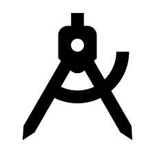

Abhijeet Maheshwari
• Management Information Systems Graduate student with 2+ years of experience in Java Programming
• Passionate about learning new languages and tools.
• Expertise in Java and RESTful API Development
• Excellent problem solving, presentation, communication and interpersonal skills
Experience
Project Intern
• Built their MVP for the customers
• Developed the backend of thier Karaoke application
• Involved in the architecture of the application
Enterprise Information Technology Intern
• Developed Restful API and fixed code bugs in SpringBoot Framework
• Built CICD pipeline to integrate SonarQube, Jenkins and GitHub
• Automated smoke tests and regression test using Selenium, Cucumber and Gherkins
Project Intern
• Researched on viable options for integration of an IVR in 4D healthcare System.
• Devised a strategy for 4D healthcare on the basis of competitive Research.
Graduate Teaching Assistant
• Assisted in automating the paper-based grading system to web-based platform for over 450 students.
• Conducted lab sessions and guided students with the necessary support to bolster students learning.
Associate Developer
• Developed complex components of Marriott’s website using Java 8 (Play framework), RESTful APIs and Microservices. • Owned Quality of project deliverables and expedited bug fixing via extracting the Query logs in Sumologic. • Assisted Client during the end to end user acceptance testing phases as well as Environment Setup for Test execution. • Involved in the Production Release team and successfully release six releases for the client. • Developed a component which reduced the runtime of the Sonar Report by 300%. • Transformed the user interaction of the JW Marriott’s website which increased their revenue by about 60%.
Business Development Associate
• Used the Tool ‘Lead Squares’ to better understand the client’s business and successfully increased revenue.
• Analyzed the requirement gathered from the client and was Involved in extensive B2C sales.
• Devised a sales plan which had an enormous impact on the sales and thus was awarded with “maximum Sales award by an intern” thrice in four months.
Education
University of Illinois at Chicago
Vellore Institute of Technology, Vellore
Projects
Web Application for Statistical Analysis
Developed an application that uses the script file used to execute and obtain the statistical analysis(Regression, correlation and central tendencies) as
well as the Data visualizations(Histograms and Scatter plots) of the data on the server.
Used the JSF Framework for the backend and Database integration and JSP
for the front end of the Web Application.It was a mix of Application development and Data Analysis.
Full Requirement Document
Quiz App: Android Mobile Application
Developed a webservice to add, delete, update questions and choices in the quiz database hosted on Azure which is consumed by Android studio in order to develop the QuizApp
Online Shopping Site for Books
This project was an e-commerce book store. The website had the ability to view list of books, their information and reviews. The customers can add number of books to the cart and buy using the COD payment method. Upgraded the poor client encounter and in addition enhanced the heap treatment of the application and added a couple of more element to the application accordingly enhancing the general effectiveness of the application.
Bookstore: Standalone Database Application
h ine requires neither Python nor the Database.
Webcam Motion Detector
Developed an application that used to detect motion in the webcam and plotted the result in a time frame in case of any movement using various libraries of python like Open CV and Cv2.
Online Banking System Prototype
Analyzed an existing banking system website and designed the website layout, which provided customers facilities to transfer funds and also to rate the website. Creatively integrated the database and developed the interface using JSP and Java
Healthcare Kiosk Interface Prototype
Built an application for healthcare kiosk that took user inputs of lifestyle and food habits and plotted the analysis to healthcare company. User can see probable health outcomes based on information that he provides during next visit
Data Analysis of Airbnb Miami and Paris
Provided statistical analysis of factors that affect revenue and prices of Airbnb listings in Miami and Paris. Applied data cleaning, hypothesis testing and linear regression techniques in R to achieve an accuracy of 79%.
Skills
-

-

- 
Python R-Language Java Android Studio
- Programming: Java, Python, Micro services, JSF, HTML5, CSS3, JSP, JDBC, JavaScript, Spring MVC, SpringBoot, Azure
- IDEs: Eclipse, Visual Studio Code, Android Studio, Jupyter Notebook, WebStorm, Android Studio
- Database: MS Access, MySQL, MS SQL Server, PostgreSQL, SQL lite3
- Testing Skills: Selenium, Cucumber, Gherkins, Junits
- Frameworks: JSF, Hibernate, Spring MVC, Web Services
- Testing Skills: Selenium, Cucumber, Gherkins, Junits
- Analytical Skills: R, MS-Excel, Sumologic, Tableau, RapidMiner
- Management : Jira, Lead-Square, Microsoft Project, Agile, SDLC
- Productivity: Microsoft Office, SonarQube, GitHub, Jenkins, Xperience Management, Sumologic, Jira, Confluence, Agile, SDLC
Achievements & Certifications
- Udemy Certified Python Developer
- Udemy Certified JavaScript Developer
- Udemy Certification in Tableau
- Board Member of Informs Student Chapter
- ‘Rising Star of the Team’ Award, Sapient; 2016
- ‘You Make a Difference’ Award, Sapient; July’17.
- ‘Super Nova’ Award, Sapient, Dec’17
- Client Recognitions from JW Marriott for “Teamwork”, “Dedication” and “People Growth”, Sapient, 2016-2018.
- Maximum Sales Award, Byju’s (Thrice), Jan’16-Mar’16
- Member of the IT Helpdesk department, 2013-2015